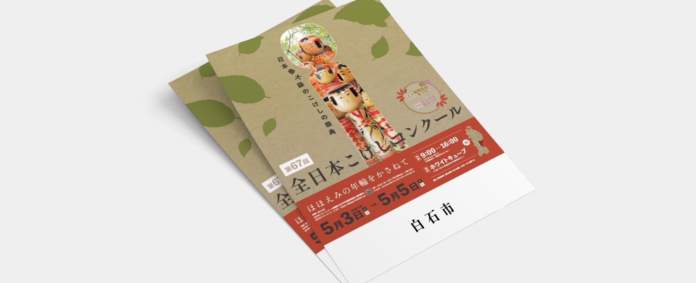
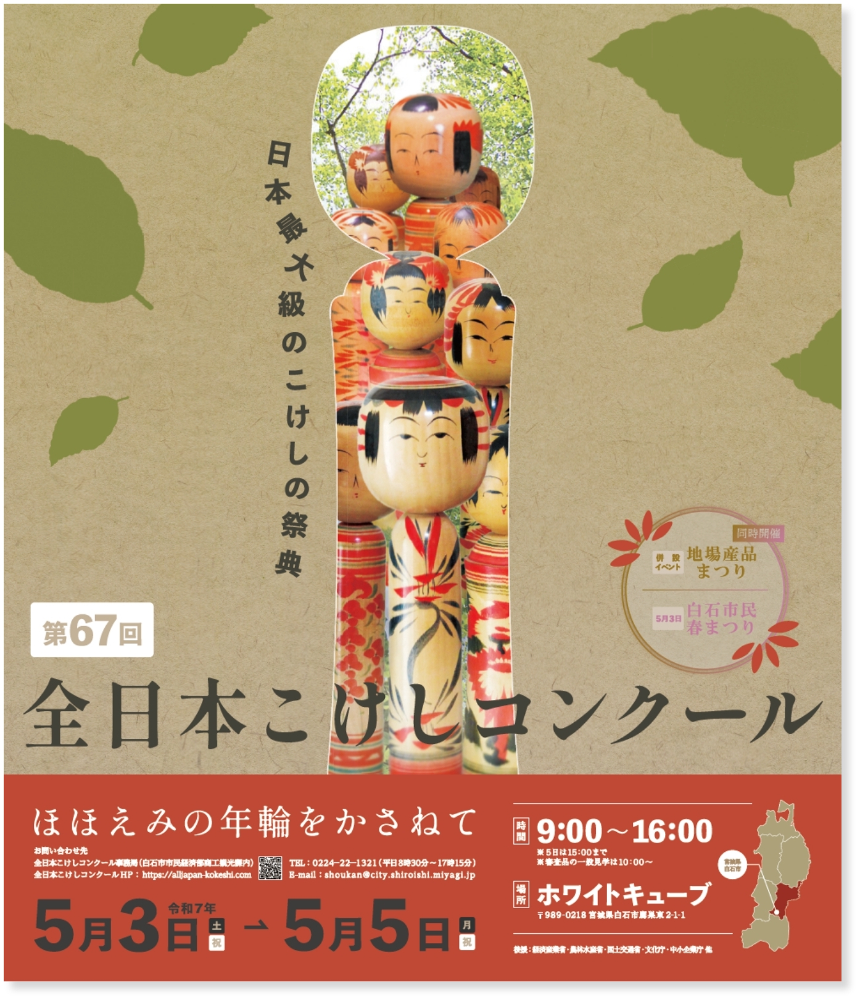

全日本こけしコンクール
チラシ｜コンペ制作
日本最大級のこけしの祭典「全日本こけしコンクール」を告知するポスターデザインを作成しました。地域の伝統工芸である弥治郎こけしを象徴的に表現し、イベントの魅力を視覚的に伝えることを目指しました。

目的
宮城県白石市を代表するイベント「全日本こけしコンクール」と、その象徴である弥治郎こけしを全国的にPR し、来場者数の増加と地域文化の認知度向上を図る。
ターゲット
全国のこけし愛好家、伝統工芸や郷土文化に興味がある人々、家族連れや観光地イベントを楽しみたい人
制作期間・ソフト
企画・デザイン：３日（ illustrator ／ Photoshop ）
詳細
- 中央に大きなこけしを配置し、伝統工芸の魅力を象徴的に表現。
- 和紙の背景と市のシンボルツリー・ブナの葉で温かみと地域らしさを演出。
- 下部にイベント情報を整理し、コントラストを活かして視認性を向上。